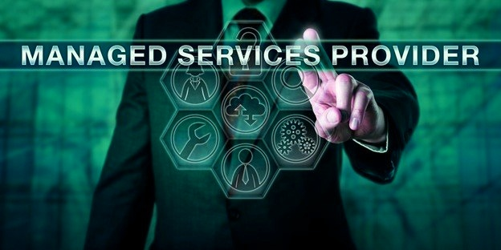

What Are MSP Services?
An MSP (managed service provider) is an IT services provider that is responsible for the management of a business's IT infrastructure, such as hardware deployment, software installation, and network security. Sometimes an MSP will provide installation services for solutions such as VoIP phones or wireless access points. An MSP Services will help a business save on IT costs, since IT management isn't commonly a department in most companies.
What Does an MSP Do?
One key component of what makes an MSP stand out is that MSPs offer solutions such as these in the form of managed services (hence the name Managed Service Provider).
A managed service is a solution, such as a cloud-based service, that is offered on a regular, ongoing basis with the relied on service supplier taking control of delivering the product results that are assured as part of the managed services.
For example, an MSP who provides backup as a service would take full responsibility for planning and carrying out the business's backup needs on an ongoing basis. Likewise, an MSP who provides Security-as-a-Service would fully manage and monitor a client's cyber security needs.
Managed services are a great choice for clients because these services deliver fully-remote tech support. The client typically must not make investments in hardware or software for managed services to work properly.
A further advantage of managed solutions is the fact that they are offered on an ongoing basis. This makes them comparable to what is called a break-fix strategy, where companies call in help whenever there's an issue.
Why Do I Need an MSP?
The MSP market focuses on the challenges that SMBs face, which are typically defined as companies with fewer than 1,000 employees. These firms typically do not have the financial resources to maintain an internal IT department.It might be large enough to create or even implement a single IT staff that is large enough and diverse enough in its skill sets to offer a full range of IT support services to all the company's IT needs.
The Industries MSPs Work With
MSPs operate in almost every industry, from manufacturing and distribution to healthcare, education, and beyond. People nowadays believe that MSPs are only popular within the IT sector, but this is incorrect. In today's business environment, all companies need IT services for their departments and functions, so MSPs fill that need.
Benefits of Using Managed IT Services
Managed service models allow MSPs to provide a variety of helpful services to businesses of all kinds:
- Restricted IT departments because managed services are generally more affordable for companies and deliver superior help pertaining to IT services.
- Helping free up a company's internal resources for IT management instead of obtaining around.
- Providing cutting-edge cybersecurity expertise, which can be challenging to accomplish in-house (since cybersecurity experts are rare and may not come cheap).
- Guidance on the latest regulatory requirements (for MSPs who provide compliance services).
- 24/7 support services (if these are guaranteed as part of the managed services contract).
- Clear definition of IT management tasks and responsibilities via service contracts.
- MSPs can help address in-house IT staff shortages.
- MSPs can respond quickly to emergencies, even if their internal team is in disarray.
- MSPs can provide scalability options for bringing on additional resources incrementally or temporarily, based on a company's needs.
- Another problem with places of higher cost is that MSPs allow IT talent to be shared with numerous clientele at precisely the exact same time.
- Companies situated in better areas can operate remotely with MSPs located in less costly regions, thus supplying lower costs.
- Companies in locations with fewer IT pros can work with MSPs remotely to meet their needs regardless of the local labor force's size.
- An MSP can replace a company's entire IT department or offer a single specific service.

In Conclusion, MSP is a managed service provider. An MSP provides support for clients' networks, hardware and applications. Managed services can help a business avoid the high cost of hiring in-house IT staff, and it increases the likelihood that a company's technology investment will run smoothly and effectively.